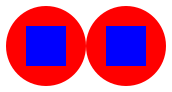

Assignment 2: Designing methods for complex data
Goals: Learn to design methods for complex class hierarchies. Practice designing the representation of complex data.
1 Instructions
the names of classes,
the names and types of the fields within classes,
the names, types and order of the arguments to the constructor,
the names, types and order of arguments to methods, or
filenames,
You will submit this assignment by the deadlines using the course handin server. Be aware of the fact that close to the deadline the server may slow down to handle many submissions, so try to finish early. There will be a separate submission for each problem - it makes it easier to grade each problem, and to provide you with the feedback for each problem you work on.
Your submissions for this homework will be organized as follows:
Homework 2 Problem 1: Places.java
Homework 2 Problem 2: Pictures.java
Due Date: Sept 21, 10:00 pm
Practice Problems
Work out these problems on your own. We will not collect them, but save them in an electronic portfolio, so you can show them to your TA during office hours, review them before the exam, use them as a reference when working on the homework assignments.
Problem 10.6 on page 102
Problem 11.2 on page 113
Problem 12.1 on page 125
Problem 14.7 on page 140
Problem 15.2 on page 149
Problem 15.3 on page 149
Problem 15.8 on page 171
Problem 1: Places of Interest
The following DrRacket data definition describes a simple map of places of interest:
;;A Place is a (make-place String [List-of Feature]) (define-struct place [name features]) ;; A Feature is one of ;; -- Restaurant ;; -- Venue ;; -- ShuttleBus ;; A Restaurant is a (make-restaurant String String Double) (define-struct restaurant [name type average-rating]) ;; A Venue is a (make-venue String String Int) (define-struct venue [name type capacity]) ;; A ShuttleBus is a (make-shuttle-bus String Place) (define-struct shuttle-bus [name destination])
We are giving you the names of the classes or interfaces you will probably need
—
A reminder on naming conventions: For lists of data, the names of the interface should always start with ILo, while the two classes’ names start with MtLo for the empty lists and ConsLo for the nonempty lists; all three of these names should be followed by the name of the datatype of the elements of the list. So we would have ILoString, MtLoString, ConsLoString to represent lists of Strings, ILoBook, MtLoBook, ConsLoBook to represent lists of Books, etc.
Draw a class diagram for the classes that represent this data definition. (You can draw this on paper, or in ASCII art as a comment in your submitted file. You do not need to hand this in.)
Define Java classes that represent the definitions above.
Describe (in English, or in a diagram, or in code...) the contents of a map that has at least one venue, two restaurants, three places, and four shuttle busses.
Design the data representation of the example you just described.
Name your examples class ExamplesPlaces
In the ExamplesPlaces class design the example of the following places:
- A place named "CambridgeSide Galleria", with the following features:
A "sushi" restaurant named "Japocalypse", with rating of 4.1 stars
A "coffee" restaurant named "Starbucks", with a 4.1 rating
A "bridge shuttle" shuttle bus to South Station
- A place named "South Station", with the following features:
The "Little Italy Express" shuttle bus to the North End
"Otto's Pizza" restaurant, that sells "pizza", rated 4.2
The "Crimson Cruiser" shuttle bus to Harvard
"Boston Common", a "public" venue with capacity for 150,000.
- A place named "North End", with the following features:
The "TD Garden" "stadium" venue, with capacity 19,580.
"The Daily Catch", a 4.4-star restaurant selling "Sicilian"
- A place named "Harvard", with the following features:
A "Freshmen-15" shuttle bus to the North End
"Border Cafe", a 4.5-star "Tex-Mex" restaurant
"Harvard Stadium", a "football" venue with seating for 30,323
Name the "CambridgeSide Galleria" example cambridgeSide. Our test program will check that the field cambridgeSide in the class ExamplesPlaces represents this information. (You may name the other places, and all the items inside them, anything you like, though the names should be reasonably descriptive.)
There is some double-counting that can happen here. We will eventually see how to prevent this duplication from happening, but not for quite a while!
Design the method totalCapacity that computes the total available seating in all the venues reachable (via some transit means) from the current place.Design the method foodinessRating that computes the average rating of all the restaurants’ ratings, for all the restaurants reachable from the current place.
Hint: you need will some helper methods for this...
Tricky! Design the method restaurantInfo that produces one String that has in it all names of restaurants reachable from a place, their food types in parentheses, and each restaurant separated by comma and space.
So for the CambridgeSide Galleria example above this String would be
"Japocalypse (sushi), Starbucks (coffee), The Daily Catch (Sicilian), Otto's Pizza (pizza), The Daily Catch (Sicilian), Border Cafe (Tex-Mex)"
Note: You can combine two Strings with a + operator, or by invoking the method concat (e.g. s1.concat(s2) produces a new String appending the String s2 to the String s1.)
Note: There is a comma and space between any two entries, but not after the last one.
In a comment in your file, explain why some methods double-count some information. Also tell us if there are any other methods in your code where this duplication occurs. (Hint: look very carefully at the output from the tester library when it shows your data.)
Problem 2: A Picture is worth a thousand words
Define the file Pictures.java that will contain the entire solution to this problem.
For this problem, you’re going to implement a small fragment of the image library you’ve been using for 1114 and 1115. Each picture is either a single Shape or a Combo that connects one or more pictures. Each Shape has a kind, which is a string describing what simple shape it is (e.g., "circle" or "square"), and a size. (For this problem, we will simplify and assume that each simple shape is as tall as it is wide.) A Combo consists of a name describing the resulting picture, and an operation describing how this image was put together.
There are three kinds of operations: Scale (takes a single picture and draws it twice as large), Beside (takes two pictures, and draws picture1 to the left of picture2), and Overlay (takes two pictures, and draws top-picture on top of bottom-picture, with their centers aligned).
Design the classes (and interfaces) needed to represent the given information.
Sketch the class diagram for the classes and interfaces you have designed. (You can draw this on paper, or in ASCII art as a comment in your submitted file. You do not need to hand this in.)
- In the ExamplesPicture class define example data that represents the following images (the colors don’t matter; they’re just for illustration here):
A circle -
 , a single circle of size 20
, a single circle of size 20 A square - , a single square of size 30
A big circle - , the result of scaling circle
A square on circle -
A doubled square on circle - 
You should define each picture by its name (e.g. square or bigCircle). Any combo image should use the description text given above as its description.
Our test program will use this data to test your methods.
Add to your examples one more example of picture for each of the possible operations. Do not modify the existing pictures.
Design the method getWidth that computes the overall width of this picture.
Hint: follow the design recipe... working through examples really helps.
Design the method countShapes that computes the number of single shapes involved in producing the final image.
Note: Make sure you count every shape each time it is used.
Design the method comboDepth, that computes how deeply operations are nested in the construction of this picture. For example, the comboDepth of the last example picture above is 3.
Design the method mirror. This should leave the entire image unchanged, except Beside combos, which should have their two sub-images flipped (all names can remain untouched). This mirroring should happen the entire way down the image.
Tricky! Design the method pictureRecipe that takes an integer depth, and produces a String representing the contents of this picture, where the recipe for the picture has been expanded only depth times. For example, the pictureRecipe at depth 0 for the last example image above is "doubled square on circle", at depth 2 is "beside(overlay(square, big circle), overlay(square, big circle))", and at depth 3 or more is "beside(overlay(square, scale(circle)), overlay(square, scale(circle)))".
In more detail: invoking pictureRecipe on a Combo produces its name if the given depth is less than or equal to 0, and the formula of its mixture (at that depth) otherwise.
Hint: If you get stuck, you may want to use a wish list to determine subproblems that may be of use to you, and that you can delegate to when needed.